Columns show normalized τ = 0, 0.5, 1; actual time is scaled by T_end. Rows include every algorithm scheduled by the immutable run plan.
| Algorithm / run status | Start (τ=0) | Midpoint (τ=0.5) | End (τ=1) |
|---|---|---|---|
| branch-and-bound run: run_20261012T042044Z__branch-and-bound__minmax__london-0000030.instance-0928f729f528-3__r00__682c92c46558 COMPLETED; feasible=True; verified=True (CERTIFIED_CONTINUOUS); optimality=OPTIMAL | 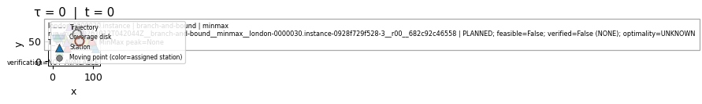 | 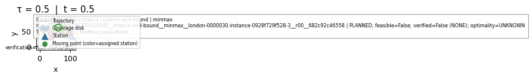 | 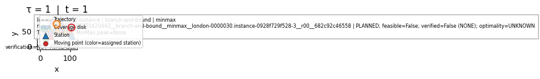 |
| brute-force run: run_20261012T042044Z__brute-force__minmax__london-0000030.instance-0928f729f528-3__r00__3bd008be0690 COMPLETED; feasible=True; verified=True (CERTIFIED_CONTINUOUS); optimality=OPTIMAL | 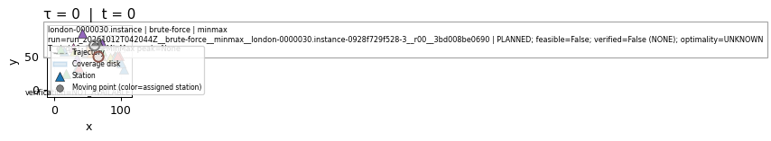 | 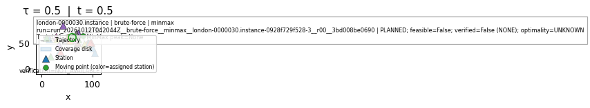 | 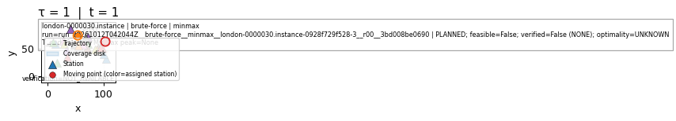 |
| genetic run: run_20261012T042044Z__genetic__minmax__london-0000030.instance-0928f729f528-3__r00__4eb7a03dccb8 COMPLETED; feasible=True; verified=True (CERTIFIED_CONTINUOUS); optimality=FEASIBLE | 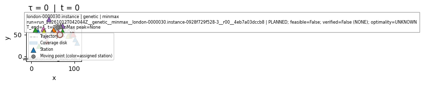 | 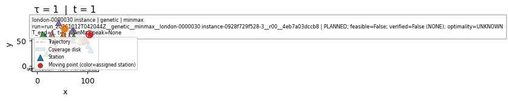 | |
| greedy run: run_20261012T042044Z__greedy__minmax__london-0000030.instance-0928f729f528-3__r00__3142e7881a8f COMPLETED; feasible=True; verified=True (CERTIFIED_CONTINUOUS); optimality=FEASIBLE | 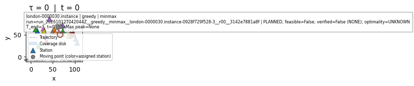 | 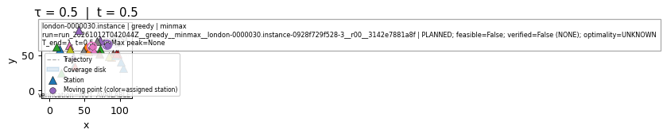 | 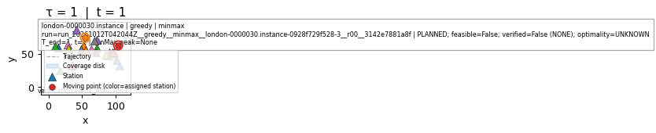 |
| ip-kont run: run_20261012T042910Z__ip-kont__minmax__london-0000030.instance-0928f729f528-3__r00__1afe07c171bb SKIPPED; feasible=False; verified=False (NONE); optimality=UNKNOWN | SKIPPED; feasible=False; verified=False (NONE); optimality=UNKNOWN NO_SOLUTION_ARTIFACT | SKIPPED; feasible=False; verified=False (NONE); optimality=UNKNOWN NO_SOLUTION_ARTIFACT | SKIPPED; feasible=False; verified=False (NONE); optimality=UNKNOWN NO_SOLUTION_ARTIFACT |
| local-search run: run_20261012T042044Z__local-search__minmax__london-0000030.instance-0928f729f528-3__r00__7fe17d30abcf COMPLETED; feasible=True; verified=True (CERTIFIED_CONTINUOUS); optimality=FEASIBLE | 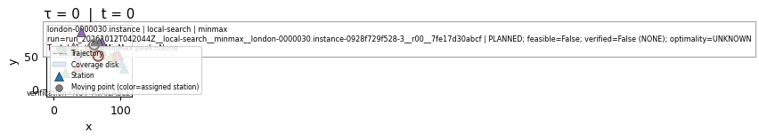 | 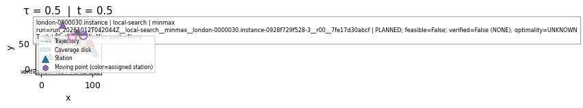 | 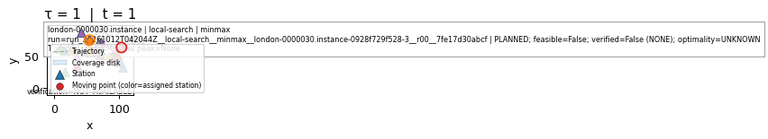 |
| lp-rounding run: run_20261012T042045Z__lp-rounding__minmax__london-0000030.instance-0928f729f528-3__r00__5c2840c69d0d COMPLETED; feasible=True; verified=True (CERTIFIED_CONTINUOUS); optimality=FEASIBLE | 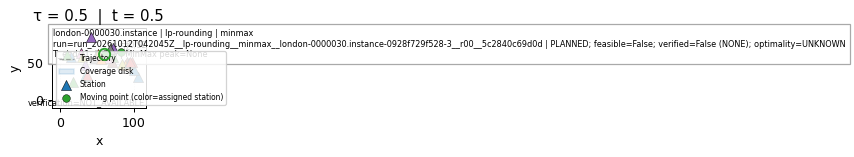 | ||
| nn run: run_20261012T042045Z__nn__minmax__london-0000030.instance-0928f729f528-3__r00__28d55d227372 COMPLETED; feasible=True; verified=True (CERTIFIED_CONTINUOUS); optimality=FEASIBLE | 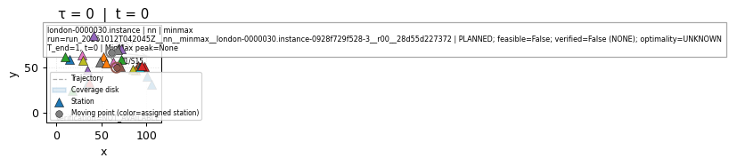 | 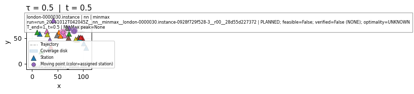 | 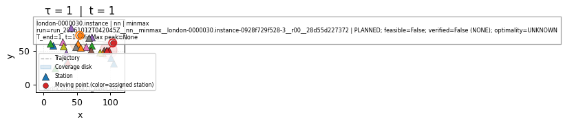 |
| primal-dual run: run_20261012T042045Z__primal-dual__minmax__london-0000030.instance-0928f729f528-3__r00__76142aade921 COMPLETED; feasible=True; verified=True (CERTIFIED_CONTINUOUS); optimality=FEASIBLE | 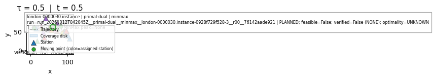 | ||
| sa run: run_20261012T042045Z__sa__minmax__london-0000030.instance-0928f729f528-3__r00__0a9a2ab37cc9 COMPLETED; feasible=True; verified=True (CERTIFIED_CONTINUOUS); optimality=FEASIBLE | 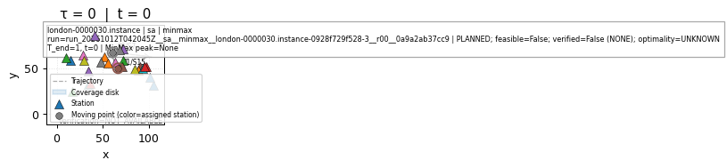 | 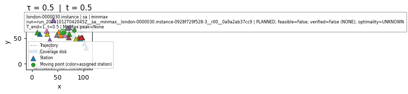 | 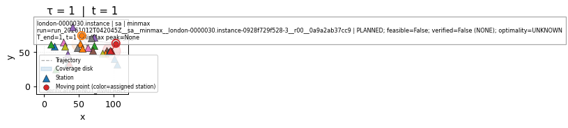 |
| shifting run: run_20261012T042045Z__shifting__minmax__london-0000030.instance-0928f729f528-3__r00__bb7dc0538276 COMPLETED; feasible=True; verified=True (CERTIFIED_CONTINUOUS); optimality=FEASIBLE | 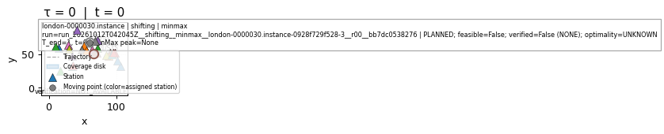 |